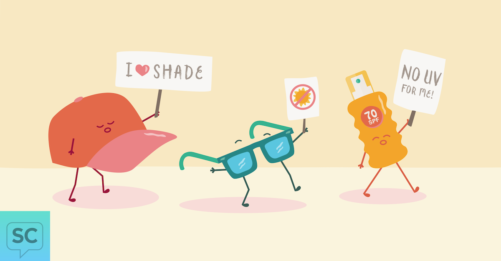

-
TIMING OF DAILY ACTIVITIES
Limit your time in the sun. Time your daily activities to avoid sun exposure from 11 a.m. to 3 p.m. Avoid staying in the sun so long that you get a sunburn.
-
SHADE
Seek shade when possible during your outdoor activities.
-
PROTECTIVE CLOTHING
Wear protective clothing that covers your arms and legs e.g. long sleeves and pants. Also wear a hat if possible.
-
SUNSCREEN
If you cannot cover up or avoid the sun through timing, apply a sunscreen with a sun protection factor (SPF) of at least 30 before going outside (recommendation from American Academy of Dermatology).
-
NO TANNING BEDS
UV exposure from a tanning bed can also cause skin damage.
-
REGULAR SELF CHECKS
Check your skin regularly for any development of new skin growths or changes in existing moles/other lesions. Visit a doctor if you notice any suspicious changes.